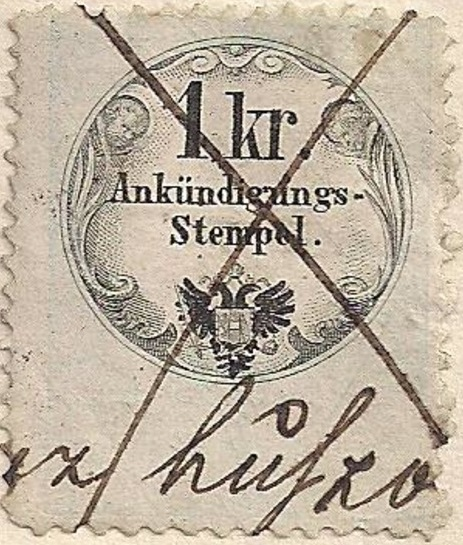
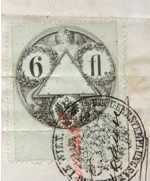
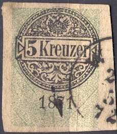

1850 issue, with "C.M."
Note: on my website many of the
pictures can not be seen! They are of course present in the
catalogue;
contact me if you want to purchase the catalogue.

"Ankundigungs-Stempel."; tax on announcements. The
values 1/2 k, 1 k and 2 k exist. Also with "1870" added
in the design.
1850 issue, with "C.M."
This or similar designs, with inscription
"C.M." below the value was issued in 1850. The
following values exist: 1 k, 2 k, 3 k, 6 k , 10 k, 15 k, 30 k, 45
k, 1 Fl, 2 Fl, 3 Fl, 4 Fl, 5 Fl, 6 Fl, 8 Fl, 10 Fl, 12 Fl, 14 Fl,
16 Fl, 18 Fl and 20 Fl. The larger values are larger. All values
are in green and black, except the 1 k which is green and orange
and the 2 k which is printed in green and red.
Similar stamps, but with inscription 'centesimi' or 'Lire' were
issued in Austrian Italy. Also stamps
in red and black were issued for Austrian
Italy.
In 1858 this set was re-issued, without the inscription "C.M".

In this design the following values exist (all in black with grey background and slightly different designs) 1/2 k, 1 k, 2 k, 3 k, 4 k, 5 k, 6 k, 7 k, 10 k, 12 k, 15 k, 25 k, 30 k, 36 k, 50 k, 60 k, 72 k, 75 k, 90 k, 1 Fl, 2 Fl, 2.50 Fl, 3 Fl, 4 Fl, 5 Fl, 6 Fl, 7 Fl, 8 Fl, 10 Fl, 12 Fl, 14 Fl, 15 Fl, 16 Fl, 18 Fl and 20 Fl.

Austrian Italy issue with inscription
in "Centesimi". Also a black and red background for
Austrian Italy.
In 1863 the design was again slightly changed, with the value written in words below the circle


Value below circle in words
The following values were issued: 1/2 k, 2 k, 3 k, 4 k, 5 k, 7 k, 10 k, 12 k, 15 k, 25 k, 36 k, 50 k, 60 k, 75 k and 90 k (all in black and grey).
Hungary issued fiscal stamp in similar designs, example:


With blue inscription '1870' (black stamps with green background) the following values exist: 1/2 kr, 1 kr, 2 kr, 3 kr, 4 kr, 5 kr, 7 kr, 10 kr, 12 kr, 15 kr, 25 kr, 36 kr, 50 kr, 60 kr, 75 kr, 90 kr, 1 Fl, 2 Fl, 2 Fl 50 kr, 3 Fl, 4 Fl, 5 Fl, 6 Fl, 7 Fl, 10 Fl, 12 Fl, 15 Fl and 20 Fl. All values have different frames and the higher values are larger.


1879 issue 75 k blue and black
With inscription '1879' exist in a numeral design: 1/2 k black and red, 1 k black and green, 2 k black and blue, 3 k black and brown, 4 k black and red, 5 k black and green, 7 k black and blue, 10 k black and brown, 12 k black and red, 15 k black and green, 25 k black and blue, 36 k black and brown, 50 k black and red, 60 k black and green, 75 k black and blue and 90 k black and brown. In a design with mythical figures: 1 Fl black and red, 2 Fl black and green, 2.5 Fl black and blue, 3 Fl black and brown, 4 Fl black and red, 5 Fl black and green, 6 Fl black and blue, 7 Fl black and brown, 10 Fl black and red, 12 Fl black and green, 15 Fl black and blue and 20 Fl black and brown. The larger values are larger in size.


1881 issue
With inscription "1881" exist in a numeral design: 1/2 k black and red, 1 k black and green, 2 k black and blue, 3 k black and brown, 4 k black and red, 5 k black and green, 7 k black and blue, 10 k black and brown, 12 k black and red, 15 k black and green, 25 k black and blue, 36 k black and brown, 50 k black and red, 60 k black and green, 75 k black and blue and 90 k black and brown. In a design with mythical figures: 1 Fl black and red, 2 Fl black and green, 2.5 Fl black and blue, 3 Fl black and brown, 4 Fl black and red, 5 Fl black and green, 6 Fl black and blue, 7 Fl black and brown, 10 Fl black and red, 12 Fl black and green, 15 Fl black and blue and 20 Fl black and brown. The larger values are larger in size.
The following values exist: 1/2 k black and green, 1 k blue and brown, 2 k black and red, 3 k green and grey, 5 k blue and brown, 7 k black and red, 10 k green and grey, 15 k blue and brown, 25 k black and red, 36 k green and grey, 50 k black and green, 60 k blue and brown, 75 k black and red, 90 k green and grey, 1 Fl brown and green, 2 Fl green and yellow, 2.5 Fl bleu and red, 3 Fl lilac and yellow, 4 Fl brown and green, 5 Fl green and yellow, 6 Fl blue and red, 7 Fl lilac and yellow, 10 Fl brown and green, 12 Fl green and yellow, 15 Fl blue and red and 20 Fl red and grey.
(Reduced sizes)
With inscription '1885' exist in a numeral design: 1/2 k blue and red, 1 k green and violet, 2 k brown and blue, 3 k grey and green, 4 k blue and red, 5 k green and violet, 7 k brown and blue, 10 k grey and green, 12 k blue and red, 15 k green and violet, 25 k brown and blue, 36 k grey and green, 50 k blue and red, 60 k green and violet, 75 k brown and blue and 90 k grey and green. In a design with mythical figures: 1 Fl blue and brown, 2 Fl green and red, 2 1/2 Fl brown and green, 3 Fl grey and green, 4 Fl blue and brown, 5 Fl green and red, 6 Fl brown and green, 7 Fl red and grey, 10 Fl blue and brown, 12 Fl green and red, 15 Fl brown and green and 20 Fl violet and orange.


With inscription '1888' exist in a numeral design: 1/2 k black and blue, 1 k black and red, 2 k black and green, 3 k black and orange, 4 k black and blue, 5 k black and red, 7 k black and green, 10 k black and orange, 12 k black and blue, 15 k black and red, 25 k black and green, 36 k black and orange, 50 k black and blue, 60 k black and red, 75 k black and green and 90 k black and orange. In a design with mythical figures: 1 Fl black and blue, 2 Fl black and violet, 2 1/2 Fl black and red, 3 Fl black and orange, 4 Fl black and blue, 5 Fl black and violet, 6 Fl black and red, 7 Fl black and orange, 10 Fl black and blue, 12 Fl black and violet, 15 Fl black and red and 20 Fl black and green.

This looks like a cut from a document to me. The design is more
primitive than the stamp shown above and it is imperforate.


With inscription '1893' exist in a numeral design: 1/2 k green and lilac, 1 k brown and green, 2 k blue and red, 3 k black and grey, 4 k green and lilac, 5 k brown and green, 7 k blue and red, 10 k black and grey, 12 k green and lilac, 15 k brown and green, 25 k blue and red, 36 k black and grey, 50 k green and lilac, 60 k brown and green, 75 k blue and red and 90 k black and grey. In a design with mythical figures: 1 Fl blue and red, 2 Fl blue and grey, 2 1/2 Fl green and lilac, 3 Fl violet and green, 4 Fl blue and red, 5 Fl blue and grey, 6 Fl green and lilac, 7 Fl violet and green, 10 Fl blue and red, 12 Fl blue and grey, 15 Fl green and lilac and 20 Fl violet and green.
'Austria Revenues' issued by J.Barefoot Ltd.
'Forbin Catalogue' 1915


{kind=link}
{kind=link}
{kind=link}
{kind=link}